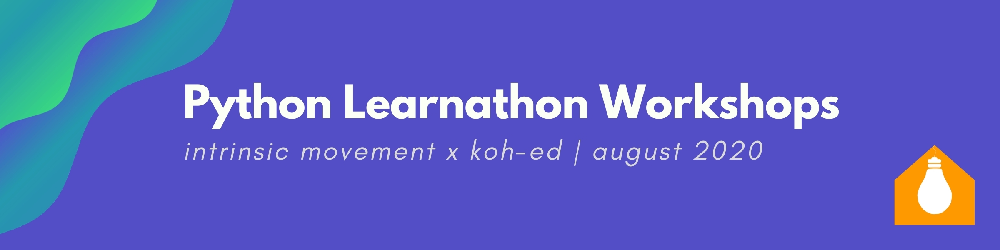

Summer 20: What we've been up to.
🧠Design and Computational Thinking Workshop: Using Python to fuel your Social Innovation Journey
This is a free series of five workshops designed to guide learners through some main principles of coding in Python. With a focus on design thinking and social innovation, this course encourages learners to code with creativity and passion.
🎨 Open Source Social Innovation Curriculum Kits: Sharing our lesson plans with the world!
